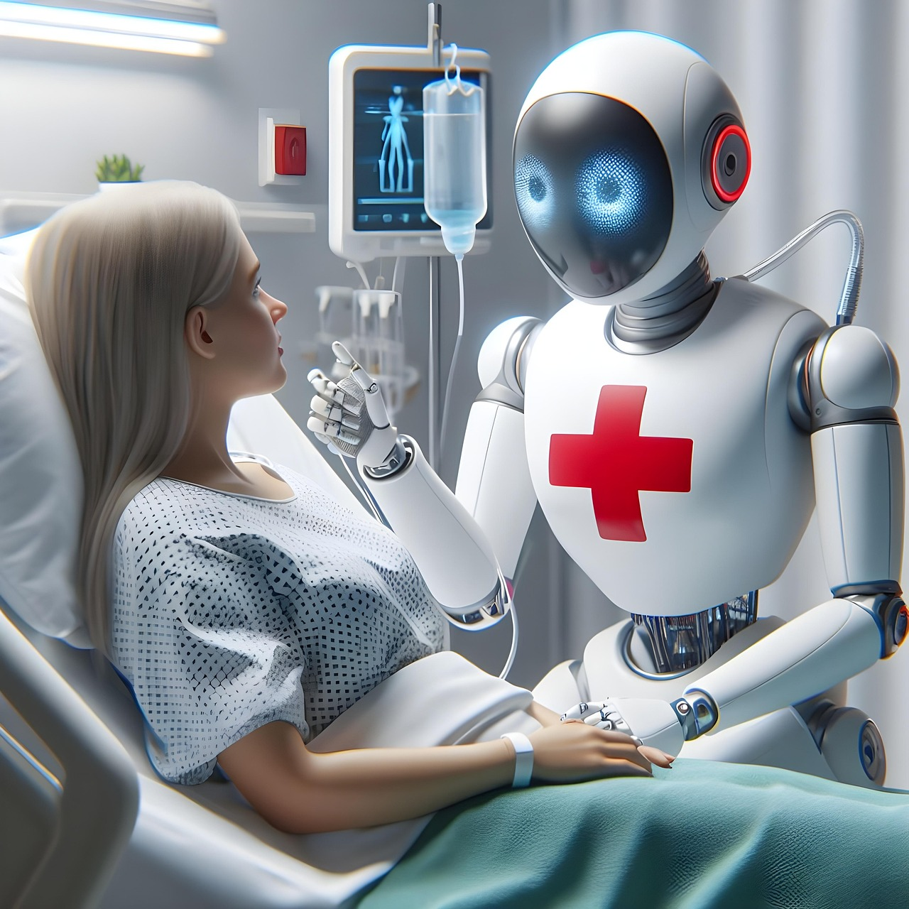
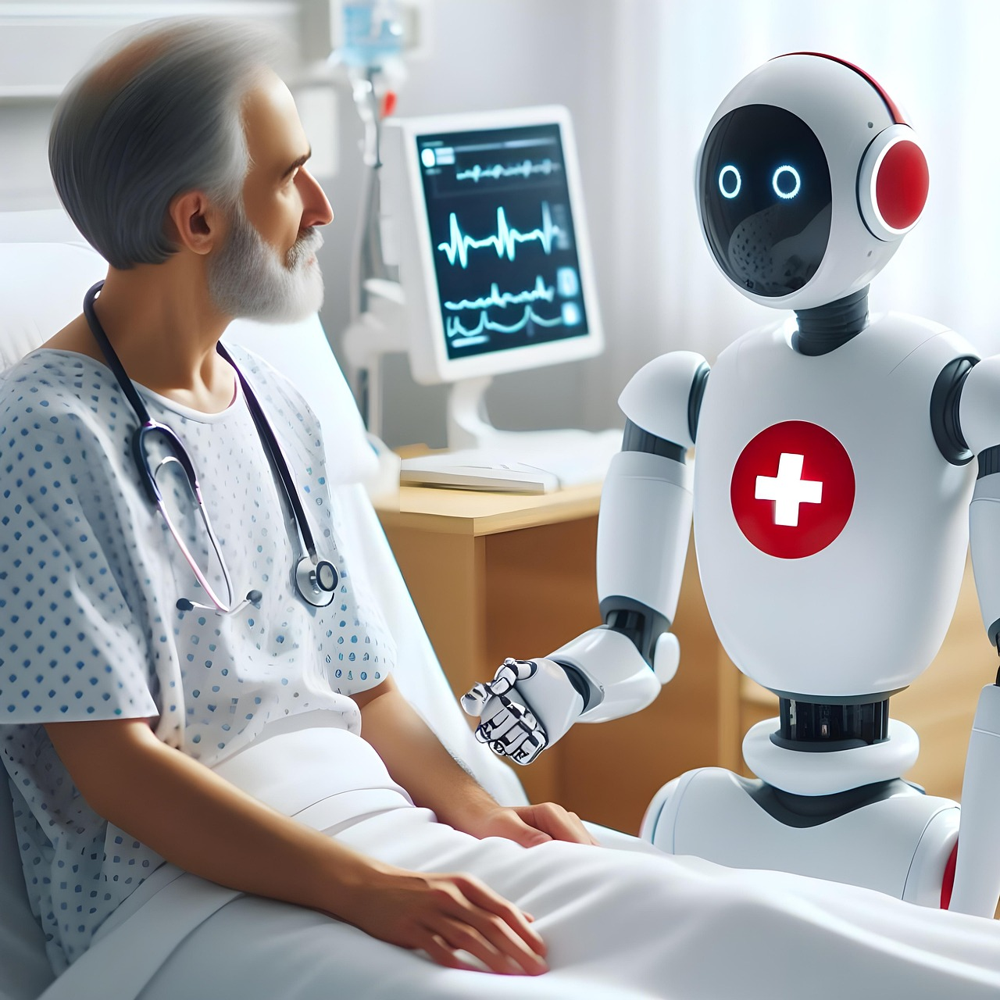

Full automation means more than a robot holding instruments. It’s a stack: perception → decision → action → verification → documentation → logistics. Today, most systems are human-supervised. But recent research milestones show autonomous surgical steps are becoming feasible — and health systems are planning large-scale robot adoption.
Teams have demonstrated autonomous soft-tissue surgical tasks in controlled settings, including perception + planning + execution loops that adapt to tissue motion.
Some AI systems can produce a diagnosis without a specialist reading the image first — especially in narrow, well-defined screening workflows.
Automation includes patient monitoring, logistics, and documentation — reducing delays and freeing staff time. Over time, these pieces connect into an “operating system” for hospitals.
Films compress diagnosis, surgery, and recovery into a single device. These visions are useful: they highlight what people want (speed, painless treatment, access) and what they fear (loss of agency, opaque decisions).
Passengers (2016) — AutoDoc medical pod: a fully automated, enclosed medical unit capable of rapid diagnosis, surgical intervention, and post-operative stabilization without human staff. It represents a “clinic-in-a-box” built for extreme isolation.
Elysium (2013) — Med-Bay healing pods: advanced medical chambers that can repair trauma, cure disease, and regenerate tissue. In the story, they symbolize medical abundance paired with restricted access and inequality.
Better Than Us (2018) — Android-assisted care: humanoid robots capable of supporting medical monitoring and caregiving. The series explores responsibility, trust, and the ethics of machine-led decisions in human life.